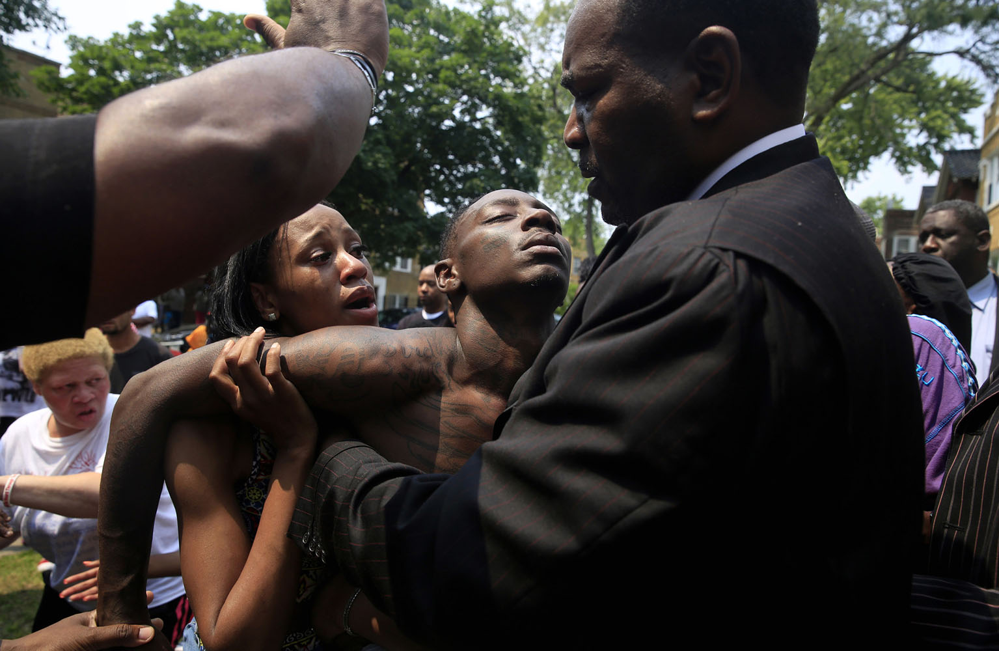
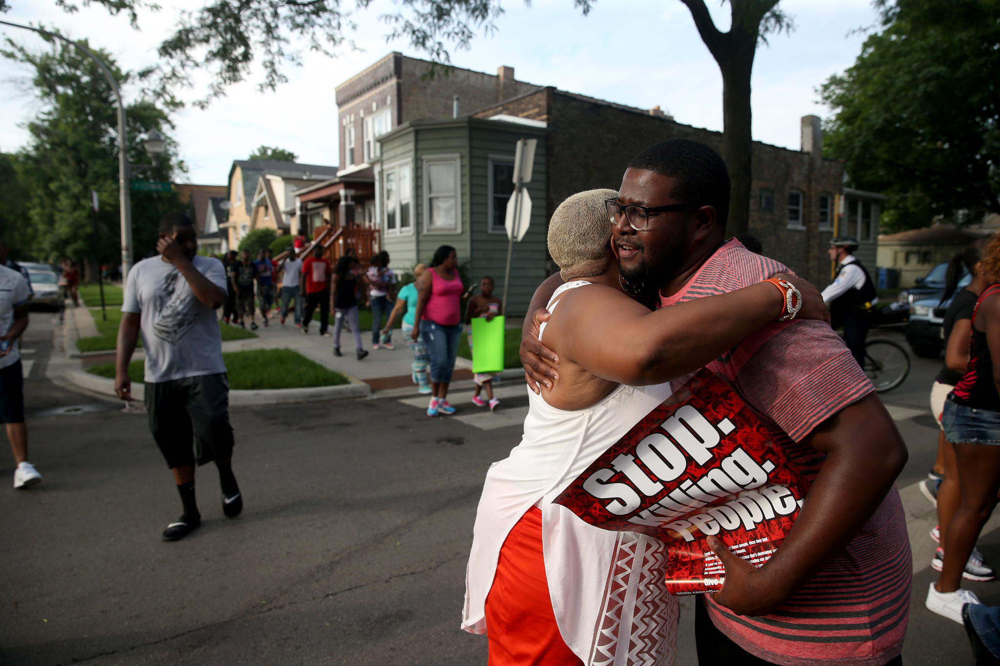

Written by: MEREDITH RODRIGUEZ, JEREMY GORNER, PETER NICKEAS, MARWA ELTAGOURI, ALEXANDRA CHACHKEVITCH, and BRIAN NGUYEN
CHICAGO TRIBUNE | JUL 05, 2015 AT 4:45 PM
At first, Antonio Brown thought the shots that killed his 7-year-old son were just more fireworks. But then people started yelling, "They shot your son," and he saw Amari collapsed on the ground.
"He was just down. He wasn't crying, he was speaking. 'Daddy, daddy,' " Brown said Sunday, sitting around the corner from where his son was shot hours before in the Humboldt Park neighborhood and still wearing clothes stained with the boy's blood.
Brown said a friend drove him and Amari to the hospital. "I picked him up and put him in the car. I was in the back seat, I was talking to him the whole time. I was like, 'You cool, I know you cool.' "
"Yeah, I'm cool. I'm cool," Amari answered, according to Brown.

Amari Brown was shot and killed on the night of July 4th, 2015.
Antonio Brown, Amari's father, collapses during a vigil held after his son's death.
Antonio Brown and Amari Brown. Family Handout
He was just seven-years old.
Antonio lights a candle for his son.
Brown said he feared his son was slipping away as he rushed for help. "He foamed at the mouth a little bit. And then I felt him get a little heavy, so I'm like, we got to do something fast."
Amari had stopped talking by the time they arrived at Stroger Hospital, and Brown handed him to the doctors and nurses. "I knew he was gonna be OK. I knew he was," Brown said. "He cool. He told me he was cool."
But about 40 minutes later, a doctor came out and said Amari was dead.
Recounting the shooting at his home in the 1100 block of North Harding Avenue, Brown said he had always seen so much of himself in the boy.
"It was just me all over again," Brown said, his hands behind his head. "That's me all over again."

Neighbors embrace during a vigil for Amari.
Amari was among the victims of a burst of violence across Chicago over an eight-hour stretch from Saturday night through Sunday morning. In all, three people were killed and 27 were wounded.
Amari had been riding his scooter up and down his grandmother's West Side block earlier in the day Saturday while his family and neighbors celebrated the holiday grilling and enjoyed each other's company.
Brown picked him up to watch fireworks at a friend's house, according to the family.
The shooting happened about five minutes after the two arrived at the house as dozens of children played out front, Brown said. It was difficult to distinguish the shots from the fireworks, he said.
"When it happened, it ain't like everybody ran," Brown said. "Nobody even run because we didn't know what was going on.
Wearing her son's favorite pillow at her waist, Amber Hailey, Amari's mom, marched with Antonio to demand justice for their son.
Amari wanted to be a police officer when he grew up.
Antonio holds his daughter close.
Antonio Brown looks toward the sky during a vigil for his son. A neighbor watches the march go by.
Amber and Antonio march for their son.
It started raining by the time the march made its way back to Antonio's home in West Humboldt Park. Back to where Amari was shot and killed, just a few days before
Friends and family had raised a tent over Amari's memorial. Antonio bent down and lit the candles one by one. The rain beat softly on the tent.
A girl in a pink dress walked up to Antonio. She grabbed his hand, he leaned down, and she whispered into his ear.
Her brother was shot and killed just the year before she said.
Antonio and the girl embrace in front of his son's memorial.
Antonio at Amari's memorial.
Antonio lights a candle for his son.
Sewn onto the inside of the 7-year-old's casket was a vibrant painting of the Teenage Mutant Ninja Turtles, each turtle braced in "attack" position, as if they'd been sworn to protect and watch over the boy below.
Above the illustration were the words, "We love you Amari."
In the week since Amari Brown's death, his favorite superheroes became a sign of solidarity for his friends and family, a symbol of the innocence of a boy whose life was cut short by gun violence. Dozens wore Ninja Turtles T-shirts to his funeral Saturday, and green balloons were fashioned into the shapes of Leonardo, Raphael, Donatello and Michelangelo.
In the back of the church, a person dressed in a plush Leonardo costume held a weeping woman in his arms.
Friends and family pay their respects to Amari at his funeral.
Amari was among the victims of a burst of violence across Chicago over an eight-hour stretch that night, in which three people were killed and 27 wounded. A violent Fourth of July weekend left 10 people dead and 55 wounded.
Family and friends who spoke at Amari's funeral echoed his long list of charming qualities: his million-dollar smile, his love for singers Lil Kemo and DLow, his inability to resist candy, doughnuts and popcorn, his deep spirituality, and his aspiration to become a police officer when he grew up, in order to protect his family.
"Please don't tell me you know how I feel, unless you have lost your child too," wrote Amari's father, Antonio, in a poem read aloud at the service. "Please don't tell me my broken heart will heal, because that's just not true."
Dahlia Trusty, Amari's older cousin who fondly remembers him breaking her mirror when he helped her move into college, said she worked to prevent him from being another statistic.
"Oh, Amari, I love you," she told the congregation. "I love you despite my sadness. I'm so happy for you because you get to be with Jesus."
A carriage drawn by white horses carried Amari Brown to his final resting place.
Amber and Antonio escort their son to his grave.
Amari was laid to rest under the branches of a towering oak tree.